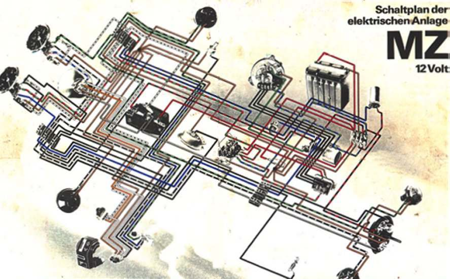
but in the multitude of counsellors they are established."
Proverbs 15:22
¶ Here are a multitude of Motorcycle Wiring Counsellors, from around the world, for you to study. Learn and Enjoy!
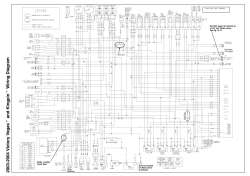 Victory 2003-05, Vegas-KP USA |
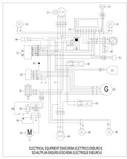 Vor 450-530 2004 Italy |
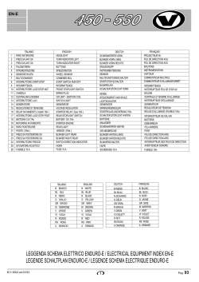 Vor 450-530 Codes Key |
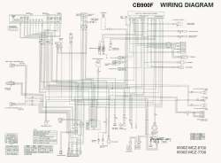 Honda CB900F 2001 Japan |
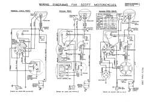 Scott 1930-1968 England |
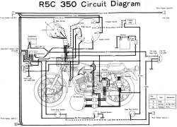 Yamaha-R5C-350cc 1972 Japan |
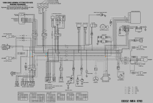 Honda VT 750cc ACE 1998-2000 Japan |
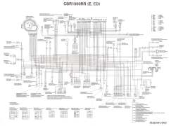 Honda CBRFF 2008 Japan |
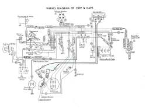 Honda CA95-CA92 1959-1966 Japan |
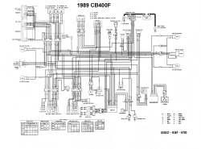 CB400F 1989 Japan |
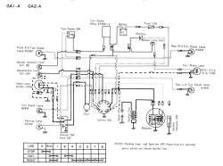 Kawasaki GA1-A 1972 Japan |
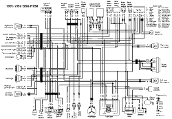 Suzuki GSX-R750 1991-1992 Japan |
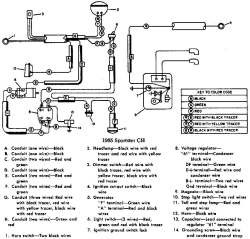 Harley Davidson Sportster 1965 USA |
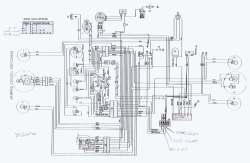 Harley Davidson MT350E Made for NATO, in the USA, by Harley Davidson 1995-96 ??? |
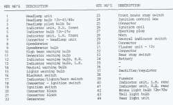 Harley Davidson MT350 Key |
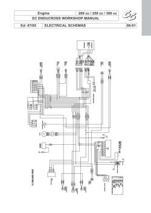 GasGas 200-300cc 2005 Spain |
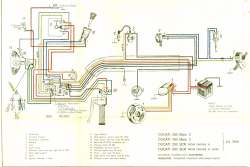 Ducati 350cc Scrambler 1968 Italy |
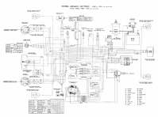 Lavarda 1000cc 3 Cylinder 1976 Italy |
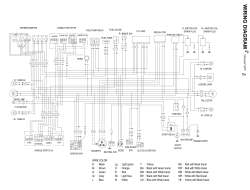 Hyosung Comet 250cc South Korean |
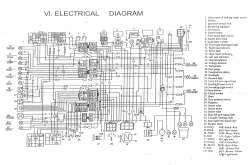 Loncin LX200 2005 China |
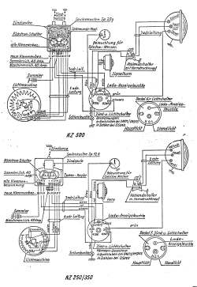 DKW NZ250-500 1953, Germany |
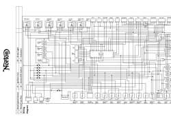 Norton 961 Commando 2000-2006 England |
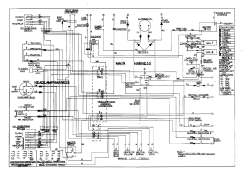 Norton Commando 1967-1977-up, 750-850cc Positive Ground England |
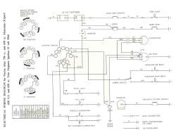 Norton Atlas 1964 Positive Ground England |
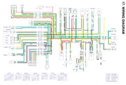 Daelim 50cc 2006 Korea |
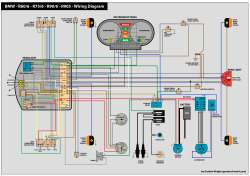 BMW R60/6-R90/6 Flat Twin 1974, Germany |
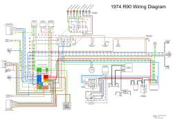 BMW R90 1974 Flat Twin Germany |
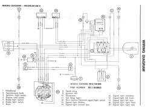 Puch Magnum MK2 1980-81 Austria |
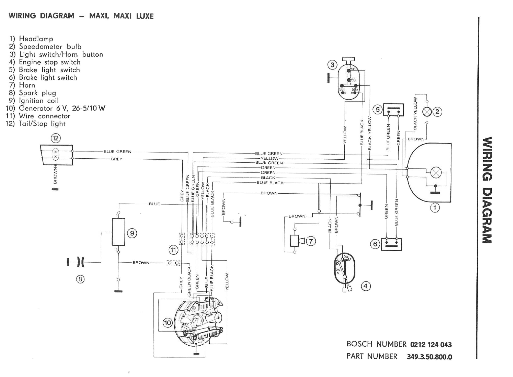 Puch Maxi 1980-81 Austria |
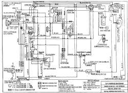 Royal Enfield Bullet 350cc1995? England/India? |
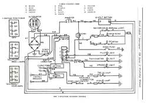 Royal Enfield 750cc 1969, England |
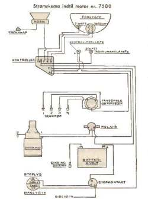 Nimbus 4-Cylinder pre-#7500 750cc, Denmark |
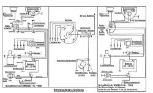 Nimbus 4-Cylinder 750cc 1934-1960 Denmark |
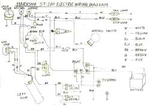 1964 Marusho 500cc Flat Twin The Japanese BMW Japan |
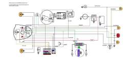 Chang Jiang 750cc, 2006? Flat Twin The Chinese BMW China |
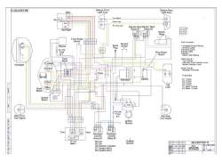 Ural 750er, 2005 Flat Twin The Russian BMW Russia |
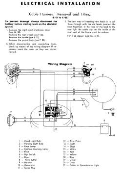 NSU 250OSB 1955, Germany |
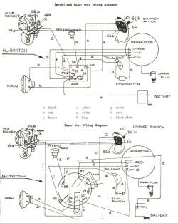 NSU Super Max 1956, Germany |
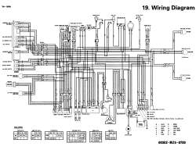 VT750C Magna 1994-2000 Japan |
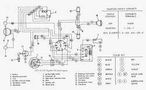 Harley Davidson M-125 Rapido, 1972, USA |
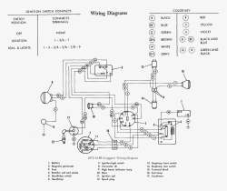 Harley Davidson M-65 Leggero, 1972, USA |
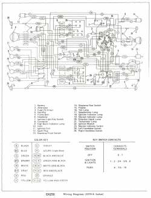 Harley Davidson SX250 1976, USA |
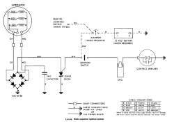 Lucas 2MC Capacitor Ignition 12 Volt, Positive Ground 1970s England |
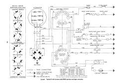 Lucas 6 Volt Positive Ground 1960s England |
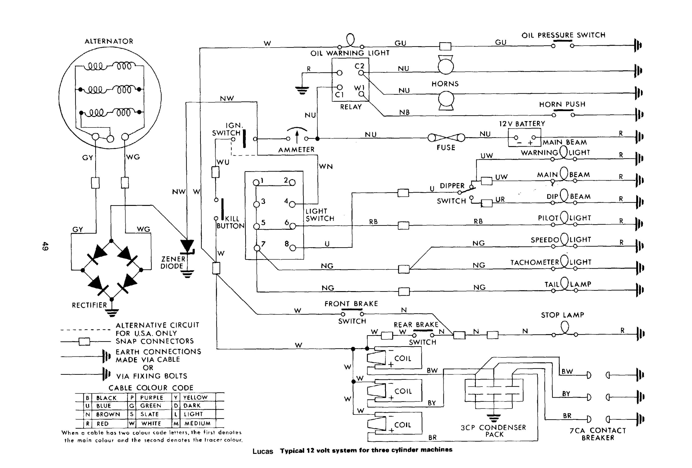 Lucas 12 Volt, Positive Ground Three Cylinder 1970s England |
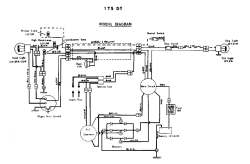 Bridgestone 175 DT 1967 Japan |
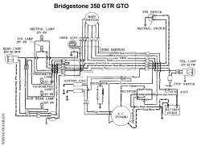 Bridgestone 350 GTR GTO 1967-1971 Japan |
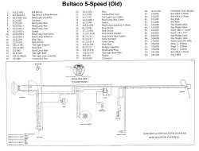 Bultaco 5-Speed Around 1967 Spain |
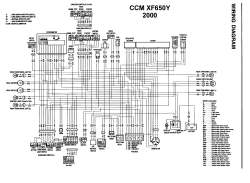 CCM XF650Y 2000 England |
BMW R75/5 1972 Flat Twin Germany |
Harley Davidson Electra Glide 1968-1969 USA |
Harley Davidson Knucklehead 61&74 Cubic Inch OHV 1947, USA |
Suzuki RMZ450 2005-2007 Japan |
Honda CB250 & 305 Twin 1966 Japan |
MZ 250 1969 Germany |
Honda C-110, 50cc 1963 Japan |
Honda C-102, 50cc 1964 Japan |
Indian Military 340 1940 USA |
Zundapp 100-125cc 1973 Germany |
Garelli 150 1969 Italy |
Kawasaki W-1 650cc Pushrod Twin 1966 Japan |
Honda CT-90 1969 Japan |
Suzuki T500cc Two Stroke Twin 1968 Japan |

Copyright © 1999-2017 dansmc.com. All rights reserved.